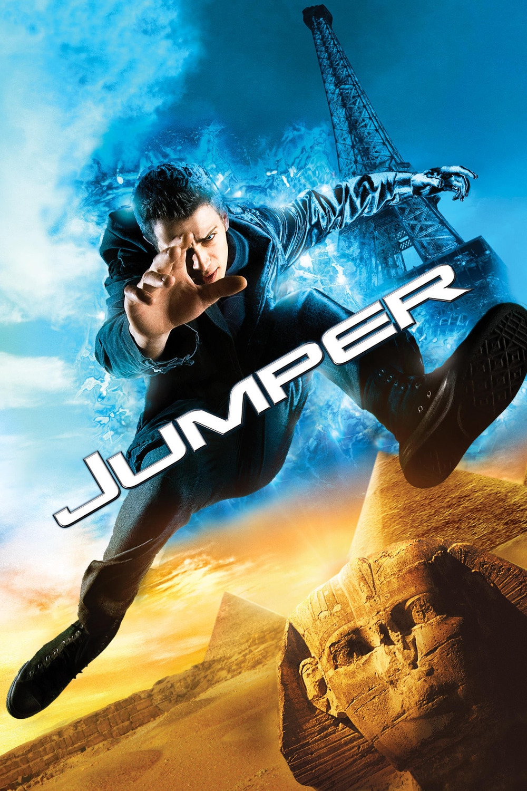

Мировая премьера: 14 февраля 2008
Слоган: Где угодно. Когда угодно. Мгновенно.
Сюжет: Дэвид Райс – обычный на первый взгляд молодой человек, обладающий невероятными способностями мгновенно перемещаться в любую точку мира. Пользуясь своим уникальным даром, Дэвид живёт без правил и границ, пока не узнаёт, что он не единственный в своём роде. Вскоре Дэвид оказывается втянут в древнее противостояние между телепортами и безжалостными фанатиками, посвятившими свою жизнь их уничтожению. Теперь его удивительная способность становится его единственным шансом выжить.
Режиссёр: Даг Лайман
В основе: Роман Стивена Гулда "Телепорт" (США, 1992)
В ролях:
| Хейден Кристенсен | Дэвид Райс |
| Джейми Белл | Гриффин О'Коннор |
| Рэйчел Билсон | Милли Хэррис |
| Сэмюэл Л. Джексон | Роланд Кокс |
| Дайан Лэйн | Мэри Райс |
| Майкл Рукер | Уильям Райс |
| АннаСофия Робб | Юная Милли |
| Макс Тьерио | Юный Дэвид |
| Тедди Данн | Марк Коболд |
| Джесси Джеймс | Юный Марк |
| Кристен Стюарт | Софи |
Бюджет: $ 85 млн.
Кассовые сборы в США: $ 80 млн.
Кассовые сборы в мире: $ 225 млн.
Продолжительность: 1 ч. 24 мин.
Рейтинг: 6.1